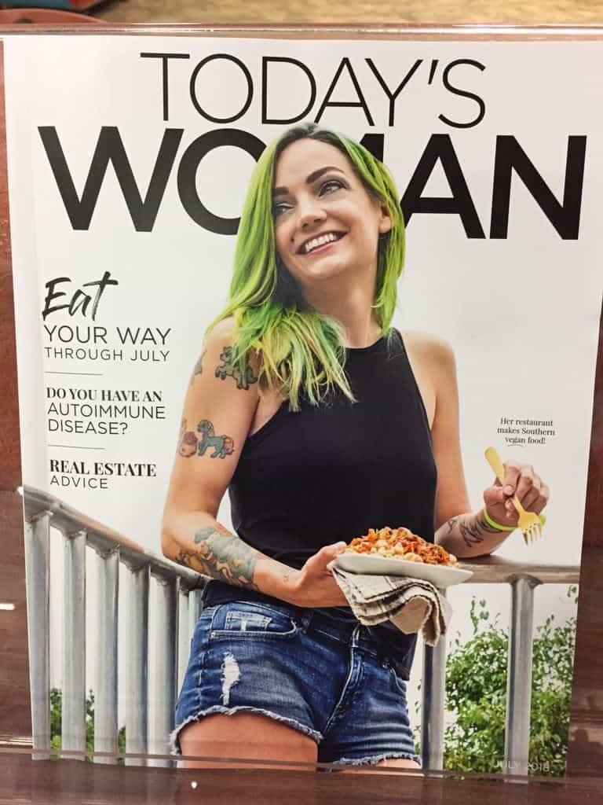
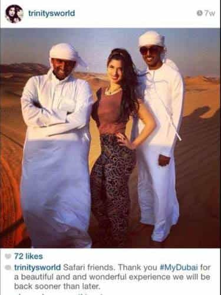
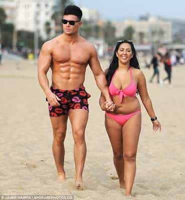

Daryush "Roosh" Valizadeh created ROK in October 2012. You can visit his blog at RooshV.com or follow him on Twitter and Facebook.


The following article was originally published on Roosh V.
Nature has given humanity a roughly one-to-one ratio of adult men to women, but the most attractive women are being taken out of circulation to either join alpha male harems or participate in degenerate lifestyle choices. This leaves the average man practically no choice in settling down with a mentally stable and cute woman in her prime.

In Islam, a man is able to marry four wives, which is what my wealthy Iranian grandfather did on his way to siring 24 or so children that included my dad (the exact number is a mystery). He took away three women that an Iranian man of lesser means could have married, creating a societal imbalance, but that’s nothing compared to what we have in the modern Western world, where a single famous man can command the sexual attentions of dozens—if not thousands—of women in their sexual prime, spoiling these women for normal men who don’t have the ability to tingle their vaginas with the same intensity.
How many actors, musicians, and sports athletes are trying to plow through as much prime pussy as possible? How many Hollywood directors and music producers are leveraging their positions for sexual gain? How many club owners, restaurateurs, Arab sheikhs, and politicians are doing the same? Each one is taking way more beautiful women out of circulation than men like my grandfather, all while elevating their standards to such an extent that no average man can ever gain their love, let alone two hours—or even two minutes–of their uninterrupted attention.

We also have to account for female lifestyle choices that are designed to delay or prevent pair bonding and marriage. The biggest is career. Most girls, while embarking on a career, balance out the boredom of working a meaningless job by hopping on the cock carousel and banging at least a few men every year. By the time a girl hits 25 years old, any man who meets her will have to deal with a walk-in closet of emotional issues and hang-ups from being pumped and dumped as much as a 1930’s brothel whore.
Then there is the Instagram and Facebook lifestyle that creates crippling dopamine addiction, which causes a girl to only be satisfied if dozens of men are actively thirsting for her every day. I estimate that if a girl has over 500 followers on Instagram, she is so used to attention from throngs of men that the love of one man cannot possibly satisfy her.
We must also throw in the growing “travel blogger” lifestyle where, instead of using only her body to get attention, a girl uses pictures and video from exotic locations to enhance her beauty. Other girls, with nothing substantial to offer the world, decide to showcase pictures of pets or their tasty overpriced meals, but even that puts them on a dopamine loop that ruins their future interactions with men.
By far, the most damaging lifestyle choice women make is becoming a sugar baby, a politically correct term for “prostitute.” For some easy cash, she whores out her body to the highest bidder (some women combine Instagram and prostitution in a seamless package). How can such an Instagram prostitute ever settle down with a man who has a normal salary? There are also the hundreds of women who enter porn every year, some from seemingly stable families. Sadly, men are so desperate for love that many would wife up a former prostitute or porn star, but it’s highly unlikely those women will make for stable families.
The Western world is a sinkhole for women. The prettiest of the bunch fall into the hole and get spit out years later an entitled #MeToo hag who can never be happy, making the Islamic four-wife rule seem downright egalitarian. The sad truth is that if you meet an attractive girl today, she was pumped and dumped by numerous sexy men, prefers to nurture her career than children, is addicted to attention via the internet, and has participated in some kind of scheme to exchange social status or cash for her pussy. She’s more than suitable for a bit of fun, but would it be wise to seek a relationship with her?

Even with the obesity and short-hair epidemic, I still see a bountiful supply of cute girls I would happily reproduce with. I would love them, let them caress my beard, and lay my seed deep within their vaginal guts, but the problem is that those guts are not for me—they are for the Chads who would never marry her, the beta orbiters who await her newest selfie as if it were a source of food, or the rich and lonely men who would sponsor her for thousands of dollars a month. They’re taking her out of circulation at the time I want her most, and by the time they are done with her, I no longer want her. I guess I’ll try to weasel in a bang or two when she is not yet fully degraded, and enjoy the fleeting pleasure that comes from it as much as I can.
Read Next: How To Stop The Fall Of Women